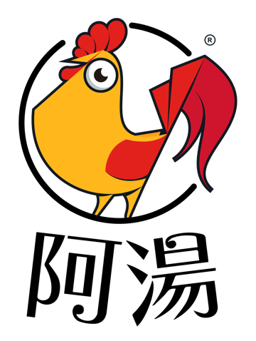
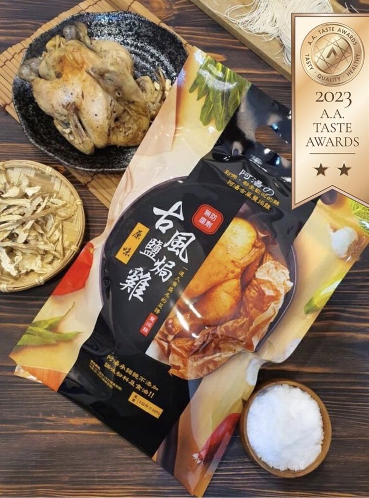
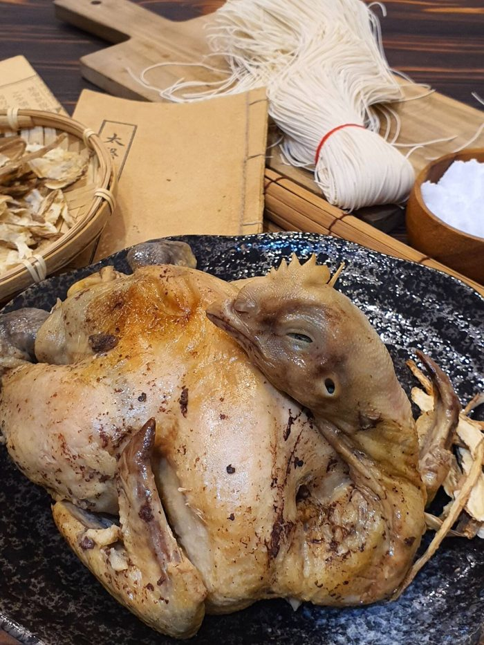

它如何呈現
先整理答案，再附來源
Google AI 摘要整合相關網頁資訊並附來源連結，買家可能從整理後的答案認識一個品牌。

MAKARMA · 2026.11
阿湯靠口碑與回頭客走了很遠。這份提案要補的是另一條路：當有人在 Google 搜尋會議餐盒、鹽焗雞或年菜時，能看見阿湯、相信阿湯，並走到詢問或下單。
先看真實搜尋量 ↘
點選切換，看每一種搜尋者在找什麼、需要什麼內容。
依官網現況（2026/11/16 查閱）對照，點開每一張看建議做法。
先解決買家的疑問，再讓他看見對應商品與訂購方式。
「台中會議餐盒」「鹽焗雞怎麼加熱」
用規格、流程與做法回答
搜尋引擎理解主題與品牌
商城、電話或社群詢問
Google AI 摘要整合相關網頁資訊並附來源連結，買家可能從整理後的答案認識一個品牌。
獎項、SGS 說明、製作方式與規格寫在文字裡，不只放在圖片中，搜尋系統才讀得到。
沒有額外必備的特殊標記；是否被引用由搜尋系統決定，不保證特定呈現。
| 方式 | 本案的角色 | 觀察指標 |
|---|---|---|
| 官網與商城 | 集中商品、規格與訂購資訊 | 商品瀏覽、詢問完成 |
| SEO 自然搜尋 | 累積品牌字以外的搜尋入口 | 非品牌曝光、點擊、有效詢問 |
| Google 廣告 | 依預算補充付費曝光（費用另計） | 詢問成本與成交 |
| 社群與口碑 | 維持回購與介紹 | 回訪與來源成交 |
| AI 摘要 | 公開內容被引用的機會 | 固定問題人工觀察 |
以下為 Google Ads 關鍵字規劃工具於 2026/11/17 查得的台灣、繁體中文資料（近 12 個月）。點選分類切換，點任一列看逐月走勢。
| 關鍵字 | 月均搜尋量 ↕ | 量體 | 廣告競爭 | 頁首出價 NT$ |
|---|
搜尋量為 Google Ads 的月平均區間估計，廣告競爭程度反映廣告競價，不等於 SEO 難度；頁首出價空白代表工具未回傳。年菜與伴手禮類需先確認阿湯是否供應相關商品。
說明規格、份量、預訂時間、配送範圍與付款，一頁回答「怎麼訂」。
路徑：搜尋會議餐盒 → 專區 → 詢問
加熱、保存、宅配與運費寫成問答，連到商城商品。
路徑：搜尋鹽焗雞 → 說明 → 商城下單
把獎項、SGS 與製作方式整理成可核對的內容。
路徑：比較 → 信任頁 → 決定
搜尋量欄位直接取自上方 Ads 資料；方案以 10 篇起算。
| # | 文章主題 | 主要關鍵字 | 月均搜尋量 | 對應頁面 |
|---|
標示「需確認」的主題，需先與阿湯確認是否供應相關商品。實際篇名與順序，取得更多資料後調整。
以下為瑪卡鎷服務中的食品類客戶，數據取自 Google Search Console。切換看點擊或曝光，滑過長條看當月數字。
各案統計期間不同，不可直接互比；GSC 為自然搜尋資料，不等於訂單。客戶回饋為客戶自述。
網站與基礎設定奠定入口，SEO 文章逐步累積搜尋入口。點選方案看內容。呈現整份合約總價、總篇數、服務期間與付款方式。
平均每月投入為合約總價 ÷ 服務月數（未稅）；三年方案服務 36 個月，付款最多 24 期，每期金額與平均每月不同。正式服務範圍、稅別與付款條件以報價單及合約為準。Google 廣告費用另計。
全站基礎 SEO、關鍵字規劃、Search Console 與 GA4 設定。
依搜尋量規劃、撰寫、上架與檢查；企業訂購專區與信任頁優先。
品牌字與非品牌字分開看，作為下一批內容的依據。
選定年期與優先順序
餐盒條件、獎項與檢驗文件
企業訂購專區與信任頁先上
依數據決定下一批
